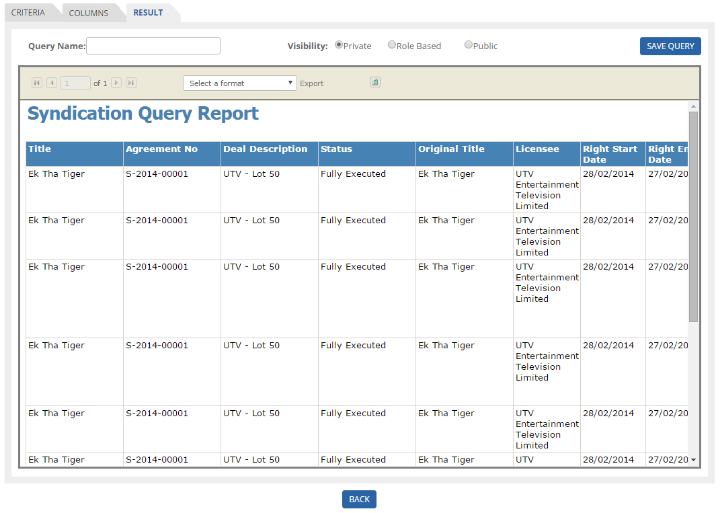

	<section>
		<article>
			<h2>Syndication Query Report<span></span></h2>
			<div>
				<p></p>

				<p>Query Criteria and Query Columns section will be same for Syndication as described for Acquisition. Please refer to Acquisition for the same.</p>

				<p><b>Query Result:</b></p>

				<p>Once the user is done with selecting all the columns which user wants to display in the result, select "Query Result" tab and the Result will be generated as shown in the below image:</p>

				<div class="triangle-border top">				
					
				</div>

				<p>The result displays the following columns:- Platform, Acquire Licensor, Right Start Date, Right End Date, Country, Currency, Director, Star-Cast, Deal status, Deal Number, Deal Description, Deal Status, Title, Territory, Holdback, Subtitling, Dubbing , Milestone, year of Release, Entity, Agreement Number as per user selection.</p>

				<p>The user can "<b>Save</b>" the Results by giving the "<b>Query</b>" a unique Name. </p>

				<p>Give the unique name to Query and click on "<b>Save Query</b>" button, it saves the query and following screen will appear.</p>

				<p>User can take out excel by clicking on Export Button (above can see image)</p>

				<p>- <b>Public:</b> All users irrespective of any security groups, but within same Business Unit can access the reports.</p>
				<p>- <b>Role based:</b> Users which belong to same security group can access the report.</p>
				<p>- <b>Private:</b> User is accessing/creating report for self. No other user can able to see or share the report .This report will be confidential to the user.  </p>


				<p><b>Query List page:</b></p>

				<p>Once the user comes back to Query List page, we can see an Option as <b>"Theatrical Territory" and "Expired Deals"</b></p>

				<div class="triangle-border top">				
					
				</div>

				<p>- If user select <b>"Theatrical Territory"</b> then Only Theatrical Territory will be visible in Country, (Theatrical Territory Means only <b>"State/Circuit"</b> which comes under India)</p>

				<p>- If user select <b>"Expired Deals"</b> then only Expired Deal Result will be visible in Query Results.</p>

				<p><b>Steps to Generate Report</b></p>

				<p>- For example, If user wants to generate report for all <b>Linear>Free platforms</b> which are syndicated for country <b>Pakistan</b>, below are the steps.</p>

				<p><b>Step 1</b></p>

				<div class="triangle-border top">				
					
				</div>

				<p><b>Step 2</b></p>

				<div class="triangle-border top">				
					
				</div>

				<p>Step 3 - Click on Result tab. All the deals that falls under selected criteria, will be displayed in Result tab.</p>
				
			</div>
		</article>
	</section>